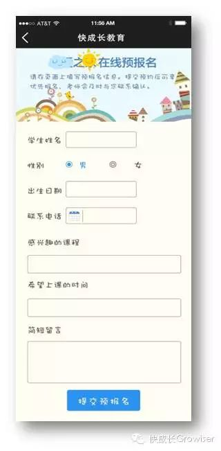

又是一年如火如荼的招生季，您的学校还停留在传统的招生模式吗？别的不说，先给您举个发生在小编身边的例子:
小编居住的小区楼下，有几位老师合伙租个房子开了个小培训机构，主要经营小学生托管、小班制补习、英语兴趣班等。前几天小编下班看到一位之前打过几次照面的老师还在愁眉苦脸的发传单，就与她交谈了一会儿，于是了解到这家机构目前的招生效果很不理想。
这位老师说：开年以来他们印了上千张精美的招生宣传单，花了不少钱，老师们还想过花钱雇人发传单会快一点，但是为了节约成本，几位老师只好亲自上阵，每天在小学附近发传单。老师们毕竟对发传单没有经验，有点不好意思，常常递出去对的传单根本没人接，有的人就算接了也会很快丢进垃圾桶，老师们觉得有点受到打击。然而真正的打击是，他们投入了那么多时间精力和成本发了那么多传单，到目前却只有十几个人来咨询，而真正转化为客户的，居然不到十个……
类似的案例还有很多，印刷宣传单-->上街发传单-->找招生代理-->支付高额招生劳务费、印刷费。这就是目前中小型教育机构每个阶段招生的常规套路，但不得不承认，在如今的社会化媒体环境之下，传统的发传单招生方式显然已经不能满足机构的招生需求了，依赖传统的招生模式，道路只会越走越难。
机构砸钱印制几千上万张宣传单页进行派发，但对周边学校发一遍就没了，甚至不能实现对周边几所学校近万名学生人均覆盖一次。加之大、中、小、微机构众多、大家一哄而起都在发传单，导致一名家长可能收到大量宣传品，其中可能有我们一张，也可能一张都没有。那么学员/家长怎么会咨询我们？怎么从众多宣传品中优先选择我们呢？
再且，通常的宣传单页内容陈旧且雷同，没有任何新意，多数学员/家长长期受到此类宣传单页的泛滥骚扰，对宣传单页早已产生了厌烦、排斥心理。于是教育机构传单越发越多，转化率却越来越低，迟迟达不到立竿见影的招生效果……
难道中小型机构真的就只能
陷入传统招生模式的泥沼中苦苦挣扎吗？
当然不是！
在这个互联网时代，“互联网+招生”将颠覆传统招生模式和观念，有效的将招生计划转移到互联网上是势在必行的。除了发宣传单，我们其实还有更有效的选择。
基于微信平台来打个比方：比如一个拥有200名学生的培训机构将一个优质的招生活动信息发布到微信平台，假设每个微信朋友圈有30人次的曝光度，那么200名学生家长同时在微信朋友圈转发培训机构的招生活动信息，就将会有：200*30=6000人次的曝光，这还只是最保守的估计。若校长和老师再积极广，让亲近的朋友帮助转发，曝光量将会大幅提高。
这么大的曝光量，不仅可以直接通过互联网实现生源的精准挖掘，并且在最大程度上降低招生成本。更重要的是可以提升机构的网络知名度和美誉度，对培训机构品牌宣传具有非常重要的意义，这都是传统的发传单无法达到的效果！
那么，怎样才能调动家长帮助转发的积极性呢？
其实，家长每天在任何地方打开手机都会进入微信，所以最好的方式就是通过微信拉近机构与家长的距离。机构在微信平台展示自己的教学风格和教学水平，让家长每天都能够通过手机了解孩子在学校的成长点滴，分享学校的教学成果，从而形成家长与机构的融洽关系以及理念共鸣。
这样一来，当机构通过微信发起某个有趣而且对家长有利的活动时，自然就可以轻易调动起家长们参与的积极性，机构的活动信息得以在家长微信朋友圈大量转发，迅速传播，将会收获意想不到的效果！
有哪些新颖的微信招生形式呢？
机构可以打造自己专属的微官网展示机构风采，通过老师、家长的转发分享，增加机构的社会关注度和曝光度。比如以下由快成长教育为机构打造的官网模板（点击图片可放大查看）：

机构也可以将精心设计的预报名表格发布到微信平台上，电子报名表可附在您公众号的课程介绍中、设置微公众号菜单，或朋友圈中转发，家长可以对感兴趣的课程进行预报名，从而提高家长报名主动性。
说到这儿，您是不是已经跃跃欲试了呢？
线上招生活动还有很多丰富多彩的形式，在植树节来临之际，我们快成长教育就精心准备了以植树节为主题的“灌溉小树苗”招生活动，不但形式新颖有趣，而且操作简单。